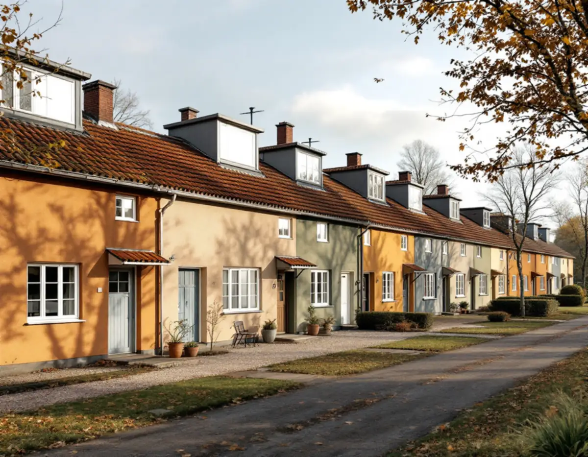
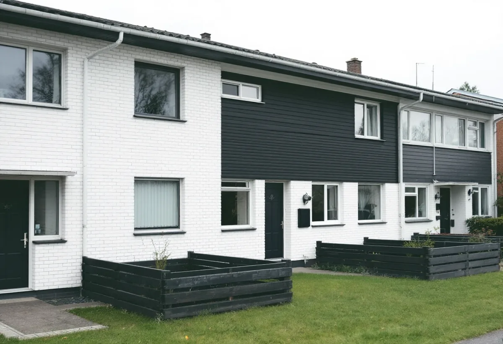

Platsbesök
Vi tittar på puts, tegel, panel och fönster och tar reda på vilken färg och kulör som sitter på.
I Upplands Väsby är det ofta en hel länga eller ett helt kvarter som delar samma färgskala. Kommunens kunskapsunderlag för kulturmiljö från 2025 beskriver kulörerna område för område, från de faluröda villorna i Väsby villastad till 1960-talets vita tegel i Skälby. Geal Entreprenad AB målar ute och inne i hela kommunen, med gratis platsbesök och skriftligt kostnadsförslag.

Radhusen och villorna längs Oxundavägen byggdes 1947 och 1958. På Vinkelvägen har radhusen grovputsade fasader där jordpigmenten skiftar mot gult, grönt, brunt och beige. Fönsterbågar och karmar av trä är vitmålade och flankeras av luckor i vitt, blått eller brunt, och entréerna har ekdörrar i en vit putsad portik.
På Radhusvägen är uttrycket mer modernistiskt. Vita band delar in putsen i fält, och fasaderna går i grönt, vitt och beige. Längs Lagmansvägen återkommer de vita linjerna i putsen. Kunskapsunderlaget räknar områdets sammanhållna färgskala och jordpigmenten i putsen till de karaktärsdrag som ska bevaras, och vägledningen är att underhålla och behålla färgskalorna.
För en målare betyder det att kulören sällan väljs hus för hus. Ska en putsfasad i en länga målas om tar vi först fram den kulör som sitter på i dag, och det är klokt att stämma av med grannarna så att längan behåller sin helhet även när husen målas vid olika tillfällen.

Kedjehusområdet Ägget i Runby uppfördes 1957–61 och består av omkring 100 kedjehus av fyra olika typer. Underlaget beskriver en blandning av rött tegel, trä och vitmålat rödtegel. De låga husen i mitten har fasader av vitmålat rödtegel eller puts, och den enkla träpanelen som kröner gavlarna har en kontrasterande kulör, som svart, blått, gult eller brunt. Garagen mellan de mindre kedjehusen har en duvblå kulör.
Skälby har vinkelradhus i en våning med fasader av vitt mexitegel. Sockeln är mörkmålad, och där fasaden möter taket sitter en mörkmålad liggande träpanel. Enligt underlaget ger de svarta detaljerna i trä tyngd och kontrast mot det vita teglet, och planken kring atriumgårdarna har samma liggande panel som fasaden.
Målat tegel och målad panel åldras olika. Panel och plank av trä är de delar som målas om, medan teglet står kvar orört, och när bara de mörka detaljerna målas om gäller det att träffa samma kulör och glans som hos grannarna. Ska takfot eller vindskivor bytas samtidigt kan det samordnas med en takrenovering i Upplands Väsby.
Upplands Väsby kommun skriver att du i normala fall inte behöver bygglov för fasadändringar på ett en- eller tvåbostadshus, och att det betyder att du kan måla om i en ny färg utan lov. Undantaget är om byggnaden är särskilt värdefull eller ligger inom ett särskilt värdefullt område och ändringen påverkar karaktären, eller om detaljplan eller områdesbestämmelser har utökad lovplikt.
Oxundavägen, Ägget, Skälby och Väsby villastad bedöms i kunskapsunderlaget som särskilt värdefulla bebyggelseområden enligt PBL 8 kap. 13 §. Bor du i något av dem är det därför klokt att fråga kommunen innan en ny kulör beställs. Kommunen påpekar också att ändringar ska göras med hänsyn till byggnadens karaktär och omgivande miljö, oavsett om lov krävs.
Boverket gör en skillnad som spelar roll i radhusområdena. Att måla om i samma kulör räknas normalt som underhåll. Att byta färgtyp, till exempel från linoljefärg till plastfärg, är inget kulörbyte men kan bedömas påverka husets yttre karaktärsdrag.
Riksantikvarieämbetet beskriver hur man vid mitten av 1900-talet alltmer gick över från kalkbruk till kalkcementbruk när hus putsades, och samtidigt till andra färger än kalkfärg. Kalkfärg fäster bra på ren kalkputs men dåligt på förgipsade och cementrika underlag. Innan putsfasaderna längs Oxundavägen målas om behöver vi därför veta vad putsen och den gamla färgen består av.
Förarbetet tar ofta mest tid: tvätt, borttagning av lös färg och lagning av sprickor med ett bruk som liknar det befintliga. Handboken påpekar att den som högtryckstvättar en fasad måste vara väl förtrogen med tekniken, så att väggen inte får vattenskador. Större putsskador hör hemma under fasadrenovering.
I Väsby villastad är det trä som gäller. Kunskapsunderlaget beskriver de ursprungliga villorna från sekelskiftet 1900 och 1910 som faluröda, i nationalromantisk stil, med vita knutar och småspröjsade fönster. Där handlar arbetet om rödfärgad panel, knutbrädor och fönsterbågar som skrapas, kittas och målas. Mer om husen i kommunen finns under takläggare i Upplands Väsby.
Vi tittar på puts, tegel, panel och fönster och tar reda på vilken färg och kulör som sitter på.
Vi kontrollerar om huset ligger i ett av de särskilt värdefulla områdena och vad detaljplanen säger.
Färgtyp, kulör, förarbete och antal strykningar skrivs ut, gärna för flera hus i samma länga.
Tvätt, skrapning, lagning av puts och trä och kittning av fönster.
Strykningarna görs i lämpligt väder och med de torktider färgen kräver.
Vi går igenom resultatet tillsammans och bättrar där det behövs.
För radhus, kedjehus och villor med äganderätt räknar Skatteverket målning av fasader, fönster, väggar och tak som rotarbete, men inte målning av staket och murar. Avdraget är 30 procent av arbetskostnaden, högst 50 000 kr per person och år, och tillsammans med rutavdrag högst 75 000 kr. Färg och material ger inget avdrag.
Du behöver äga bostaden medan arbetet utförs och bo i den. Geal drar avdraget direkt på fakturan.
På putsfasaderna är det mängden sprickor och lös färg som styr, på tegelhusen hur mycket målad panel, plank och vindskivor det finns och på trävillorna panelens och fönstrens skick. Målas flera hus i en länga samtidigt kan ställning och etablering samordnas. Platsbesöket är gratis och du får ett skriftligt kostnadsförslag.
Fasad, fönster och invändig målning.
Målare i Stockholm →Takbyte, takbesiktning och plåtarbeten.
Takläggare i Upplands Väsby →Bollstanäs, Vilunda och Runby.
Takrenovering i Upplands Väsby →Radhus, suterräng och samfälld VA.
Badrumsrenovering i Upplands Väsby →Karta, VA och tomtgräns.
Byggföretag i Upplands Väsby →Radhus från 70-talet och hus från bomässan.
Fasadrenovering i Upplands Väsby →Inflygning, trafik och tystare fönster i Väsby.
Fönsterbyte i Upplands Väsby →Kedjehus, suterräng och radon.
Golvläggare i Upplands Väsby →Radhus, kedjehus och atriumhus.
Köksrenovering i Upplands Väsby →Rännor, stuprör och radhusplåt i Väsby.
Plåtslagare i Upplands Väsby →Altan, plank och förråd vid radhus och kedjehus.
Snickare i Upplands Väsby →Radhus, kedjehus och utpekade områden.
Tillbyggnad i Upplands Väsby →